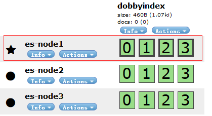

分片算法:
|
|
routing值是一个任意字符串，它默认是_id但也可以自定义，这个routing字符串通过哈希函数生成一个数字，然后除以主切片的数量得到一个余数(remainder)，余数的范围永远是0到number_of_primary_shards – 1，这个数字就是特定文档所在的分片。
这也解释了为什么主切片的数量只能在创建索引时定义且不能修改：如果主切片的数量在未来改变了，所有先前的路由值就失效了，文档也就永远找不到了。
所有的文档API（get、index、delete、bulk、update、mget）都接收一个routing参数，它用来自定义文档到分片的映射。自定义路由值可以确保所有相关文档.比如用户的文章,按照用户账号路由,就可以实现属于同一用户的文档被保存在同一分片上。
增删改（write）执行过程
不管是索引，还是文档的write操作，它们必须在主分片上成功完成才能复制到相关的复制分片上,下面我们罗列在主分片和复制分片上成功新建、索引或删除一个文档必要的顺序步骤：
1、客户端给Node 1发送新建、索引或删除请求。
2、节点使用文档的_id确定文档属于分片0。它转发请求到Node 3，分片0位于这个节点上。
3、Node 3在主分片上执行请求，如果成功，它转发请求到相应的位于Node 1和Node 2的复制节点上。当所有的复制节点报告成功，Node 3报告成功到请求的节点，请求的节点再报告给客户端。
客户端接收到成功响应的时候，文档的修改已经被应用于主分片和所有的复制分片。你的修改生效了。
副本分片复制时的相关的参数说明:
replication:
复制默认的值是sync。这将导致主分片得到复制分片的成功响应后才返回，如果你设置replication为async，请求在主分片上被执行后就会返回给客户端。它依旧会转发请求给复制节点，但你将不知道复制节点成功与否。
默认的sync复制允许Elasticsearch强制反馈传输。async复制可能会因为在不等待其它分片就绪的情况下发送过多的请求而使Elasticsearch过载。
consistency:
默认主分片在尝试写入时需要规定数量(quorum)或过半的分片（可以是主节点或复制节点）可用。这是防止数据被写入到错的网络分区。规定的数量计算公式如下：
consistency允许的值为one（只有一个主分片），all（所有主分片和复制分片）或者默认的quorum或过半分片。
注意number_of_replicas是在索引中的的设置，用来定义复制分片的数量，而不是现在活动的复制节点的数量。如果你定义了索引有3个复制节点，那规定数量是：int( (primary + 3 replicas) / 2 ) + 1 = 3
但如果你只有2个节点，那你的活动分片不够规定数量，也就不能索引或删除任何文档。
注意: 新索引默认有1个复制分片，这意味着为了满足quorum的要求需要两个活动的分片。当然，这个默认设置将阻止我们在单一节点集群中进行操作。为了避开这个问题，规定数量只有在number_of_replicas大于一时才生效。
timeout：
当分片副本不足时Elasticsearch会等待更多的分片出现。默认等待一分钟。如果需要，你可以设置timeout参数让它终止的更早：100表示100毫秒，30s表示30秒。
集群生态:
1.同集群中节点之间可以扩容缩容,
2.主分片的数量会在其索引创建完成后修正，但是副本分片的数量会随时变化。
3.相同的分片不会放在同一个节点上.
集群健康:
在Elasticsearch集群中可以监控统计很多信息，但是只有一个是最重要的时集群健康(cluster health)。Es中用三种颜色状态表示:green，yellow，red.
Green：所有主分片和副本分片都可用
Yellow：所有主分片可用，但不是所有副本分片都可用
Red：不是所有的主分片都可用；
单机多节点来了解ES的高可用
创建单集群节点
如图我们的单点集群:
实例中我们创建一个索引dobbyindex.一个索引默认指派5个主分片,实例中我们设定4个主分片和2个复制分片（每个主分片有2个复制分片对应）：
|
|
创建后索引如图:
在节点es-node1中片的存放如下:
我们的主分片都被分配到了es-node1.但是我们的8个复制分片还没有被分配到节点上, 此时的集群健康状况如下:
cluster health: yellow (4 of 12)
对应的详细信息为:
|
|
意味着所有的主分片(primary shards)启动并且运行了,集群已经可以成功的接受任意请求,但是副本分片(replica shards)还没有全部可用。
事实上所有的8个副本分片现在是unassigned（未分配）状态,即它们还未被分配给节点,在同一个节点上保存相同的数据副本是没有必要的，如果这个节点故障了，那所有的数据副本也会丢失。现在我们的集群已经功能完备，但是依旧存在因硬件故障而导致的数据丢失的风险。
增加故障转移
上面实例中的集群有单点故障的风险,没有数据冗余备份。我们可以扩展节点来保护数据不被丢失.只要第二个节点与第一个节点有相同的cluster.name(实例中为elasticsearch-cluster-centos)，它就能自动发现并加入第一个节点的集群。
如果没有，检查日志找出哪里出了问题。这可能是网络广播被禁用，或者防火墙阻止了节点通信。
当我们启动第二个节点之后:集群中的分片结构图如下:
虽然,已经有4个副本分片被分陪到es-node2节点上来了，但是按照我们定义的副本分片的值为2, 还有4个分片处于未分片状态,此时对于我们设定的参数来说,集群的健康值还是所有主分片可用，但不是所有复制分片都可用. 对应的集群健康状况:
cluster health: yellow (8 of 12)
对应的详细信息为:
所以我们还需要一个节点来分片这些副本分片,使集群达到高可用,再增加集群节点:

当我们启动第三个节点之后,整个集群上的分片都进行了有效分配,从图中可以看出.es-node1为这个集群生态中选举出来的主(master),es-node2和es-node3为集群生态中的slave(从). 这样,一些新的被索引的文档将首先被存储在主分片中，然后平行复制到关联的复制节点上。这可以确保我们的数据在主节点和复制节点上都可以被检索。
此时集群的健康状态如下：
cluster health: green (12 of 12)
对应的详细信息为：
|
|
下图为,节点es-node3加入时,分片分配过程中截取的临时图.
模拟节点宕机,集群主从重新选举
上图中我们的主节点为es-node1,如果主节点宕掉后,会怎样呢.
如图:主节点对应的进程号7421,干掉它，此时es集群生态发生了如下变化,如图:
es-node3被选举为主节点,es-node2为从节点,主分片与副本分片也变化了,主分片放置在了es-node2上,副本分片放置到了es-node3上,因为分片没有完全被分配,所以集群的健康状态变为yellow(所有主分片可用，但不是所有复制分片都可用),然后我们重启es-node1节点.
如图,重启后健康状态恢复到green,但是集群主从变化了,且主分片的位置也变化了.
模拟扩展节点
实例2中我们的集群已经达到高可用状态,对应的索引分片如图.此时我们想要扩展集群继续增加节点时,我们的分片会怎样呢,接下来我们再增加一个扩展节点es-node4.
如图:扩容后,可以看到片进行了重新分片,节点es-node1和es-node3上分别持有主分片。es-node2,es-node3,es-node4持有副本分片，由于笔者模拟过程中有主节点宕机操作,
所以从图中可以看出,新的生态集群中es-node4为主节点.对应的各个集群存储中包含的片分布信息如下:
这种状态下的片也是完全分配，green(所有主要和复制的分片都可用).
动态缩小或者扩容副本片数量
副本节点的数量可以在运行中的集群中动态的变更，这允许我们可以根据需求扩大或者缩小规模。
比如我们执行一次缩小规模操作:
|
|
这时,我们看到片的信息分又重新做了调整: 主分片分布在节点es-node1,es-node3,es-node4上.从分片分布在es-node2,es-node3,es-node4上.